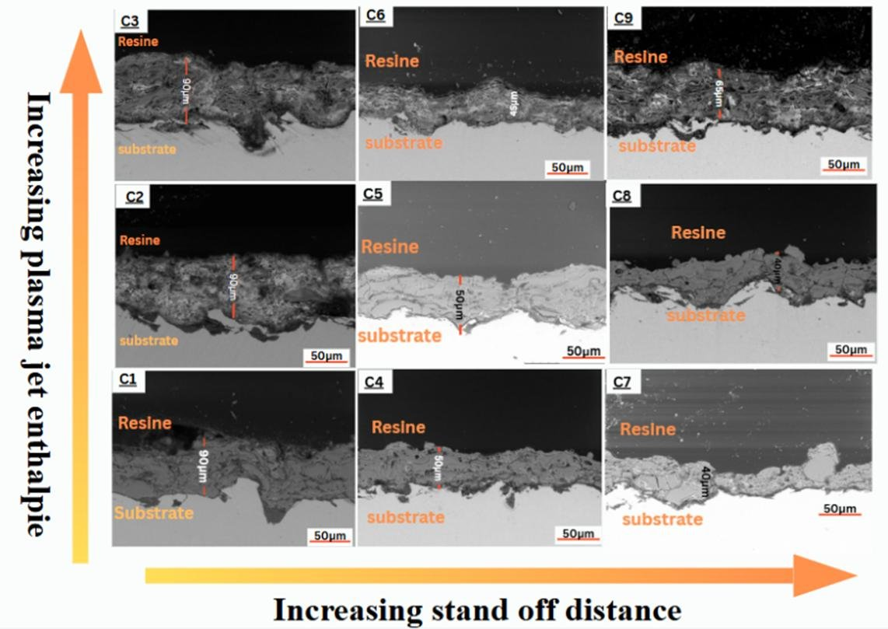
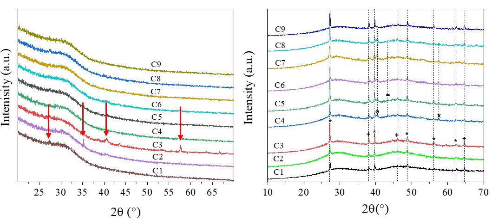
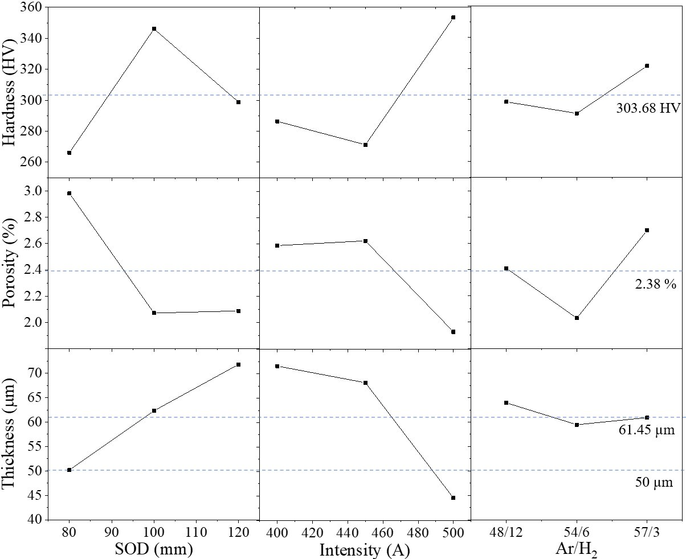
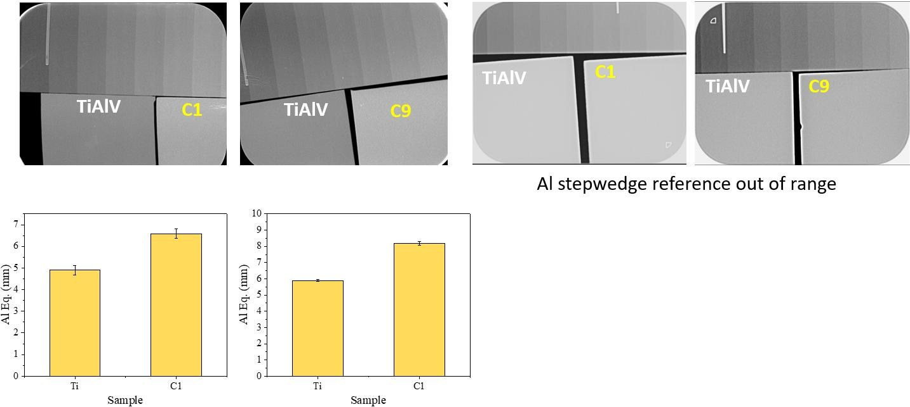
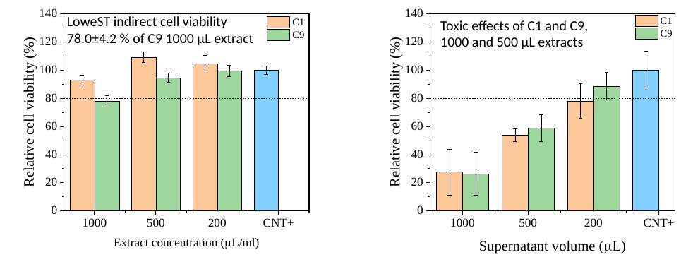
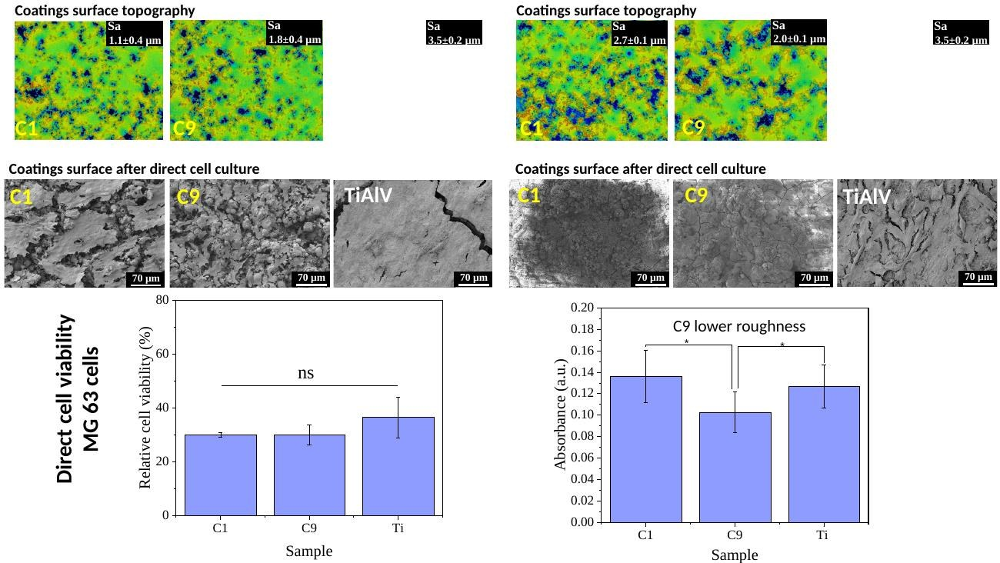
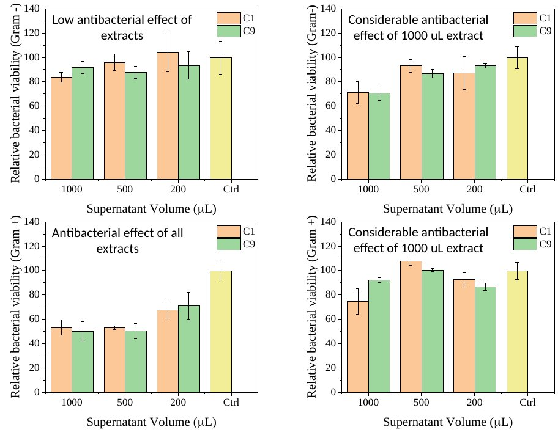

← Back to home← Volver al inicio
Atmospheric plasma sprayingProyección por plasma atmosférico
A plasma jet at several thousand degrees melts the bismuth-containing glass particles and projects them onto titanium alloy, where they flatten and build the coating.Un chorro de plasma a varios miles de grados funde las partículas de vidrio con bismuto y las proyecta sobre la aleación de titanio, donde se aplastan y forman el recubrimiento.
The techniqueLa técnica
Video: plasma spraying of a bismuth-containing glass coating.Vídeo: proyección por plasma de un recubrimiento de vidrio con bismuto. RADIOBIOCOATS, FunGlass. © TnUAD.
Process window studiedVentana de proceso estudiada
- Plasma gunPistola
- F4
- CurrentCorriente
- 400, 450, 500 A
- Spray distanceDistancia
- 80, 100, 120 mm
- Ar/H2
- 57/3, 54/6, 48/12 SLPM
- Net powerPotencia neta
- 24.7–37.5 kW
- DesignDiseño
- Latin square, 9 coatings (C1–C9)Cuadrado latino, 9 recubrimientos (C1–C9)
- GlassesVidrios
- Bi-45S5, Bi-13-93B3
- SubstrateSustrato
- Grit-blasted Ti-6Al-4VTi-6Al-4V granallado


Impactful resultsResultados destacados
31–53 %Spray distance explains up to 53 % of the variation in hardness, porosity and thickness.La distancia de proyección explica hasta el 53 % de la variación en dureza, porosidad y espesor.
1.4 %The densest silicate coating reached a porosity of only 1.44 %.El recubrimiento de silicato más denso alcanzó una porosidad de solo 1,44 %.
+2.3 mm AlThe borate coating raised the radiopacity of titanium alloy from 5.9 to 8.2 mm Al.El recubrimiento de borato elevó la radiopacidad de la aleación de titanio de 5,9 a 8,2 mm Al.
≥ 78 %MG-63 cells kept at least 78 % viability in extracts of the silicate coatings.Las células MG-63 mantuvieron al menos un 78 % de viabilidad en los extractos de los recubrimientos de silicato.
Surfaces and cross-sectionsSuperficies y secciones transversales



Structure and bismuth retentionEstructura y retención del bismuto





Radiopacity and biologyRadiopacidad y biología








All radiographsTodas las radiografíasAll in vitro testsTodos los ensayos in vitroOther techniquesOtras técnicas